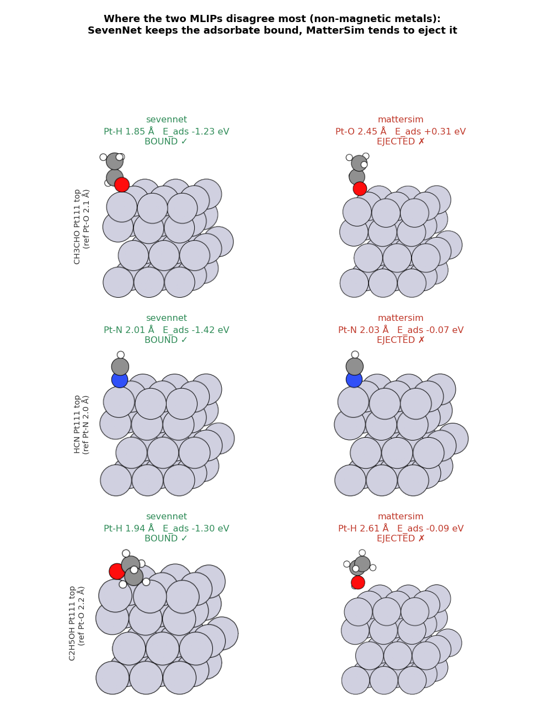
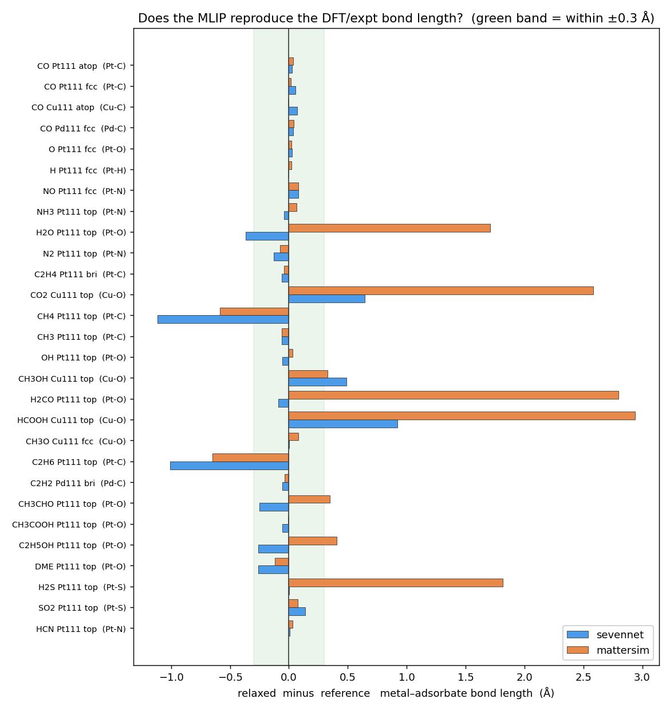
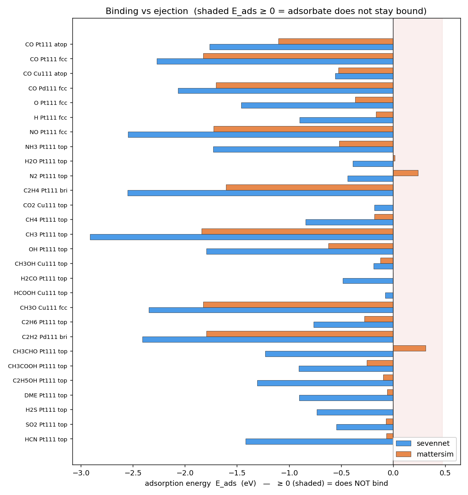
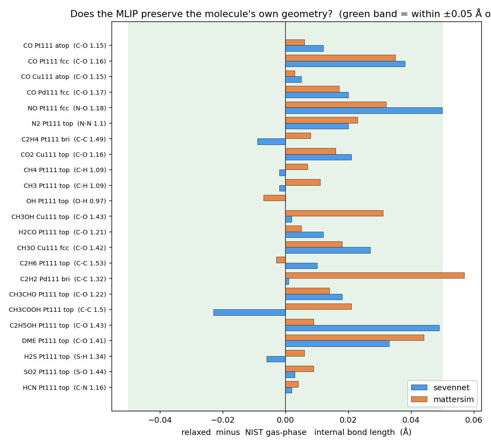

Does the MLIP predict a good final geometry? SevenNet vs MatterSim vs DFT
28 systems spanning 25 well-known molecules (inorganics, C1–C2
oxygenates and hydrocarbons) relaxed from an identical starting guess with two foundation
MLIPs (SevenNet-0 and MatterSim v1.0.0-1M), then compared on both structure
(adsorption site, metal–adsorbate bond, and the molecule’s own internal bond) and
energy (Eads). Internal bonds use rigorous NIST gas-phase references;
surface site / distance targets are indicative (replace with your DFT or OC20).
gallery · likely failures
· DFT comparison ·
by-molecule download: curated spec + references (md)
· comparison.csv
· SevenNet /
MatterSim results (json)
22/28SevenNet within ±0.3Å of ref M–X
18/28MatterSim within ±0.3Å
22/23SevenNet internal bond within ±0.05Å of NIST
22/23MatterSim internal bond within ±0.05Å
1SevenNet ejected (Eads≥0)
11MatterSim ejected (Eads≥0)
Headline (25 well-known molecules, non-magnetic metals). Restricted to
Pt, Cu and Pd — where spin-free foundation MLIPs are on fair footing (magnetic
3d metals are excluded). Both MLIPs reproduce each molecule’s internal geometry almost
perfectly against NIST gas-phase bonds (SevenNet 22/23, MatterSim 22/23
within ±0.05Å) — the predicted structures are physically sane. They diverge on
surface binding: SevenNet keeps 27 of 28 adsorbates bound and hits the target
metal–adsorbate distance in 22/28 cases, while MatterSim ejects 11/28
(only 18/28 on target). Same slab, same start, same reference — so “does the
adsorbate stay bound?” is model-dependent, and SevenNet is the more reliable of the two
here.
Where the two MLIPs disagree most

The three systems with the largest SevenNet–MatterSim Eads gap.
Same slab, same start, same reference. Left = SevenNet, right = MatterSim.
Bond-length error vs the DFT/experimental reference

Relaxed minus reference metal–adsorbate distance. Green = within ±0.3Å.
Reference is DFT/expt for the classic systems and an indicative target for the newer ones.
Binding vs ejection (adsorption energy)

Eads from each MLIP (same model used for slab + gas reference).
Shaded region Eads≥0 = the adsorbate does not bind.
Does the MLIP preserve each molecule’s own geometry?

Relaxed minus NIST gas-phase internal bond length — a rigorous reference,
unlike the indicative surface targets. Green band = within ±0.05Å. This is the
cleanest “is the predicted structure physical?” test for the newly added molecules.
Every system, side by side
system
surf
ref site
ref M–X
Sev site
Sev d
Δ
Eads
Mat site
Mat d
Δ
Eads
How to read this / caveats.
Two reference tiers. Each molecule’s internal bond is compared to a rigorous
NIST gas-phase equilibrium value. The adsorption site and metal–adsorbate
distance are indicative literature-typical targets (each card cites its source) — swap
in your own DFT or an OC20 / Catalysis-Hub pull for a fully quantitative surface benchmark.
Eads is reported per model but has no DFT reference on this page (use your
dft_singlepoint_vs_sevennet.csv for the systems it overlaps).
Both MLIPs are spin-free foundation models; MatterSim here is the small 1M checkpoint.
A larger MatterSim or a spin-aware model may behave differently. This page is restricted to
non-magnetic metals (Pt, Cu, Pd) so the spin-free comparison is fair; magnetic 3d metals
(Ni, Co, Fe) are excluded.
Cell p(3×3), 4 layers, bottom 2 fixed, one coverage; Eads uses each model’s own
gas-molecule reference (molecular references for foundation MLIPs are imperfect).
A large distance is not always wrong: N₂ is a genuinely weak binder, so a long Pt–N is
physical.
How to begin (reproduce / extend). In the isolated venv
(~/mlip-bench-venv, has torch + sevenn + mattersim):
python mlip_benchmark.py --list # the curated system list + references
python mlip_benchmark.py --calc emt --systems emt # validate the pipeline, no GPU/torch model needed
python mlip_benchmark.py --calc sevennet --calc mattersim --systems all --png
python mlip_bench_plots.py # figures + montage
Add a system by appending one S(...) row in mlip_benchmark.py (metal, facet,
adsorbate, initial site/height, and the reference geometry). To probe the CO/Pt(111) site puzzle,
compare the final energy of CO_Pt111_atop vs CO_Pt111_fcc.